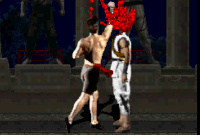
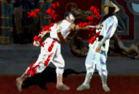
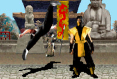
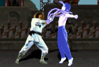
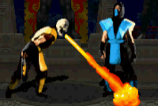
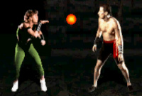
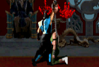

Move List/Bios - Super Nintendo (Universal)
(ROM Hack Ver. 2.0)
You can e-mail corrections/additions to The Webmaster
Last updated: 01/06/25
It's recommended that your controls match the default setting.
Mortal Kombat Champion Edition @ RomHacking.net (For Newest Rom Hack Version)
MKKomplete is not affiliated with MK-CE-Hack in any way other than giving him some props for the game.
Key:
U = Up/Jump
D = Down/Crouch
F = Forward/Toward
B = Back/Away
| Universal: HP = High Punch LP = Low Punch HK = High Kick LK = Low Kick BL = Block |
Super Nintendo: HP = Y LP = B HK = X LK = A BL = L/R Triggers |
Close Quarters:
Throw: LP (Close)
Head-Blow: HP (Close)
Knee: LK/HK (Close)
Crouched Moves:
Crouched Block: (D+BL)
Uppercut: (D+LP/HP)
Crouched Kick: (D+LK/HK)
Spin Moves:
Foot Sweep: (B+LK)
Roundhouse Kick: (B+HK)
Aerial Moves:
Flying Punch: (U/UF/UB+LP/HP)
Flying Kick: (U/UF/UB+LK/HK)
Stage Fatality available: The Pit (Just finish with an uppercut)
Fatality Distances Explained:
Close: Right next to your opponent.
Sweep: A couple of steps away (close enough to land a sweep).
Anywhere: Distance doesn't matter, can be any range (outside sweep or further works best).
Note: You can hold BL to input fatalities, as long as BL is released before the last button in the Fatality sequence is pressed.
In Sonya's case, where BL is the last button in the Fatality sequence, you would have to (Hold BL), F, F, B, B, (Release BL), and then press BL again to activate the Fatality.
Johnny Cage
Info:
Real Name: John Carlton
Age: 29
Height: 6'1"
Weight: 200 lb
Hair: Brown
Eyes: Blue
Legal Status: Citizen of the United States
Known Relatives:
Robert Carlton (Father)
Rose Carlton (Mother)
Rebecca Carlton (Sister)
Cindy Ford (Wife - Divorced)
Birthplace: Venice, California
Occupation: Actor
Bio:
A martial arts superstar trained by Great Masters from around the world, Cage uses his talents on the big screen. He is the current box-office champ and star of such movies as Dragon Fist and Dragon Fist II, as well as the award-winning
Sudden Violence.
Special Moves:
Green Bolt: B, F, LP
Shadow Kick: B, F, LK
Split Punch: (LP+BL) (Close)
Fatality: 
Decap Uppercut: F, F, F, HP (Close)
 Kano
KanoInfo:
Age: 35
Height: 6'
Weight: 205 lb
Hair: Black
Eyes: One brown, one infrared (built into a metal implant)
Legal Status: Deported from Japan and a wanted criminal in 35 countries
Known Relatives:
None (Orphaned as a small child by an American woman in Tokyo)
Birthplace: Unknown
Occupation: Criminal member of the Black Dragon organization
Bio:
A mercenary, thug, extortionist thief - Kano lives a life of crime and injustice. He is a devoted member of the Black Dragon, a dangerous group of cut-throat madmen feared and respected throughout all of crime's inner circles.
Special Moves:
Knife Throw: (Hold BL) B, F
Cannonball: (Hold BL), then make a 360° turn (F, D, B, U, F), (Release BL) (Hold BL
to extend Cannonball hover)
Fatality: 
Heart Rip: B, D, F, LP (Close)
Liu Kang
Info:
Age: 24
Height: 5'10"
Weight: 185 lb
Hair: Black
Eyes: Brown
Legal Status: Citizen of the People's Republic of China
Known Relatives:
Lee Kang (Father - Deceased)
Lin Kang (Mother - Deceased)
Chow Kang (Brother - Whereabouts Unknown)
Birthplace: Honan Province, China
Occupation: Shaolin Monk, Fisherman
Bio:
Once a member of the super secret White Lotus Society, Liu Kang left the organization in order to represent Shaolin temples in the tournament. Kang is strong in his beliefs and despises Shang Tsung.
Special Moves:
Fireball: F, F, HP
Flying Kick: F, F, HK
Fatality: 
Butterfly Kick - Deadly Uppercut: (Hold BL), then make a 360° turn (F, D, B, U, F) (*Anywhere)
*Must be within range of opponent to connect
 Raiden
RaidenInfo:
Age: Eternal
Height: 7'
Weight: 350 lb
Hair: Black
Eyes: Translucent
Legal Status: N/A (Deity)
Known Relatives:
None at Current Time
Birthplace: The Heavens
Occupation: Thunder God
Bio:
The name Raiden is actually that of a deity known as the Thunder God. It is rumored he received a personal invitation from Shang Tsung himself and took the form of a human to compete in the tournament.
Special Moves:
Lightning Bolt: D, F, LP
Torpedo: B, B, F
Teleport: D, U
Fatality: 
Electro-Decap: F, B, B, B, HP (Close)
Scorpion
Info:
Real Name: Hanzo Hasashi
Age: 32
Height: 6'2"
Weight: 210 lb
Hair: None
Eyes: Translucent
Legal Status: Scorpion is a reincarnated specter and has no legal status
Known Relatives:
Wife and child in a former life
Birthplace: The Netherrealm
Occupation: Lost soul bent on revenge
Bio:
Like Sub-Zero, Scorpion's true name and origin are not known. He has shown, from time to time, distrust and hatred towards Sub-Zero. Between ninjas, this is usually a sign of opposing clans.
Special Moves:
Spear: B, B, LP
Teleport Punch: D, B, HP
Fatality: 
Toasty!: (Hold BL), U, U (Sweep)
 Sonya
SonyaInfo:
Age: 26
Height: 5'10"
Weight: 125 lb
Hair: Brown
Eyes: Blue
Legal Status: United States Citizen
Known Relatives:
Major Herman Blade (Father)
Erica (Mother)
Daniel Blade (Twin Brother - Deceased)
Birthplace: Austin, Texas
Occupation: Lieutenant in the U.S. Army and member of a special Paramilitary Police Force
Bio:
Sonya is a member of a top U.S. Special Forces unit. Her team was hot on the trail of Kano's Black Dragon organization. They followed them to an uncharted island where they were ambushed by Shang Tsung's personal army.
Special Moves:
Energy Rings: LP, B, LP
Leg Grab: (D+LP+LK+BL) (Close)
Square Wave Punch: F, B, HP
Fatality: 
Flame Kiss: F, F, B, B, BL (Anywhere)
Sub-Zero
Info:
Real Name: Unknown
Age: 32
Height: 6'2"
Weight: 210 lb
Hair: Black
Eyes: Brown
Legal Status: None, however resides somewhere in China
Known Relatives:
None
Birthplace: Unknown
Occupation: Lifelong member of the Lin Kuei, a rare clan of Chinese, Ninja-type assassins
Bio:
The actual name or identity of this warrior is unknown. However, based on the markings of his uniform, it is believed he belongs to the Lin Kuei, a legendary clan of Chinese ninja.
Special Moves:
Freeze: D, F, LP
Slide: (B+LP+LK+BL)
Fatality: 
Spine Rip: F, D, F, HP (Close)
Reptile (Hidden/Playable)
Info:
Age: Unknown
Height: 6'2"
Weight: 210 lb
Hair: Unknown
Eyes: Unknown
Legal Status: Unknown
Known Relatives:
Unknown
Birthplace: Unknown
Occupation: Unknown
Special Moves: (Copied from Sub-Zero and Scorpion)
Freeze: D, F, LP
Slide: (B+LP+LK+BL)
Spear: B, B, LP
Teleport Punch: D, B, HP
Fatality:
Spine Rip: F, D, F, HP (Close)
Toasty!: (Hold BL) U, U (Sweep)
Play as Reptile:
On the Character Select Screen, (Hold Select) while selecting Sub-Zero.
Goro (Sub-Boss/Playable)
Info:
Age: 2000+
Height: 8'2"
Weight: 850 lb
Hair: Black
Eyes: Red
Legal Status: Prince of Kuatan on Outworld
Known Relatives:
King Gorbak (Father)
Queen Mai (Mother)
Durak (Brother - Deceased)
Seven Wives
Birthplace: Kuatan, Fourth Astral Plane of Shokan, Realm of the Outworld
Occupation: Prince of Kuatan, Ruler Supreme of Shokan's Armies
Bio:
A 2000-year-old half-human dragon, Goro has been undefeated for the past 500 years. He won the title of Grand Champion by defeating Kung Lao, a Shaolin fighting monk. It was during this period that the tournament fell into Shang Tsung's hands and was corrupted.
Goro possesses both massive strength and great agility. None who have fought him have reported any weaknesses - in fact, none who have opposed him have survived!
Special Moves:
Fireball: LK
Grab & Pound: HP (Close)
Leaping Stomp: U
Taunt: B/D
Play as Goro:
On the Character Select Screen, (Hold Select) while selecting Johnny Cage.
Shang Tsung (Boss/Playable)
Info:
Age: Over 500 Years
Height: Unknown
Weight: Unknown
Hair: Grayish
Eyes: Brown
Legal Status: Chinese
Known Relatives:
Unknown
Birthplace: China
Occupation: Shaolin Grand Master
Bio:
Over 500 years ago, Shang Tsung, a young martial arts warrior, became Grand Champion of the prestigious Shaolin tournament. Cursed by the gods, Shang was compelled to take not only the lives of all his opponents, but their souls as well.
Special Moves:
Flaming Skull: U/D
Morphs:
Johnny Cage: HK
Kano: HP
Liu Kang: LP
Raiden: LK
Scorpion: (Hold Select+HK)
Sonya: (Hold Select+LK)
Sub-Zero: (Hold Select+HP)
Goro: (Hold Select+LP)
Random Morph: R (As Shang Tsung)
Random Morph + Attack: L (As Shang Tsung)
Shang Tsung: L (When Morphed)
Play as Shang Tsung:
On the Character Select Screen, (Hold Select) while selecting Liu Kang.